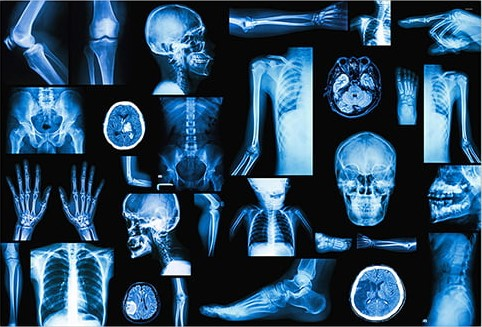
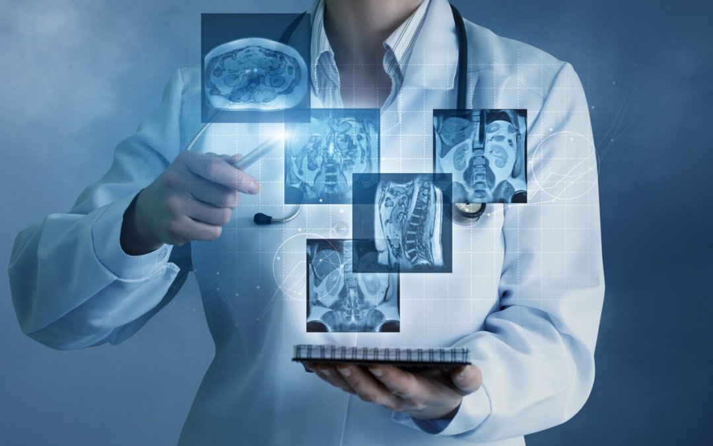

Radiologia
 Descrição
A radiologia digital é uma área da medicina responsável pelo diagnóstico por imagens. Antigamento o aparelho convencional de raio-x, era utilizado na investigação e monitoramento da saúde de órgãos, músculos e tecidos e obtinha-se os registros a partir de filmes radiográficos, na versão digital utiliza-se sensores que enviam as imagens diretamente para o computador, onde são processados e direcionados para análise e interpretação do médico radiologista. E com isso tendo como objetivo unir a gestão de negócio na radiologia associado ao uso de novas tecnologias, como: Inteligência Artificial, Big Data, Computação em Nuvem, Segurança Cibernética, Integração de Sistemas, entre outros. Atualmente já se faz uso de softwares para a realização de laudos a distância; sistemas de produção, impressão e distribuição de documentações e exames radiológicos; sincronização em nuvem; e captura e edição de imagens digitais integrando câmeras e aparelhos de raio-x.
Voltar ao início